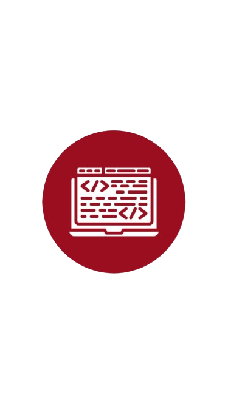
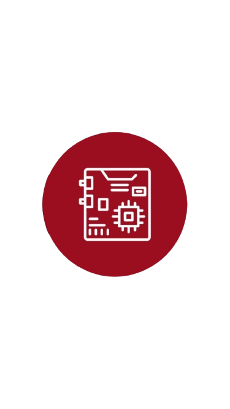
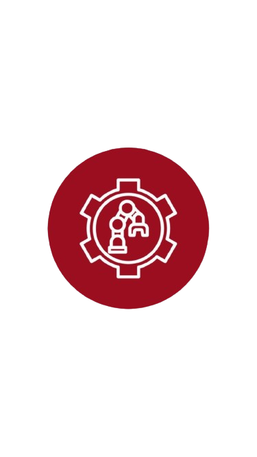
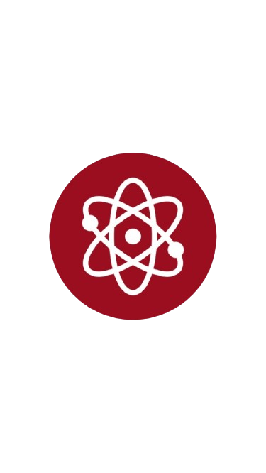
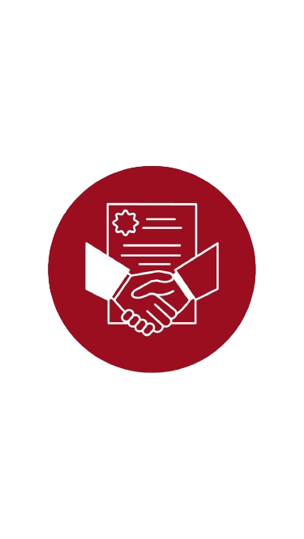

.png)
IZTECH ROVER TEAM
Hakkımızda
Biz Kimiz?
İzmir’in ilk resmi Mars Keşif Aracı (Rover) takımı IZTECH CENGAVER olarak, 2022 yılında İYTE kampüsündeki kendi özel atölyemizden yola çıktık. Sınırları zorlamayı seven tutkulu bir ekip olarak; Makine, Elektronik, Haberleşme, Kimya, Enerji Sistemleri Mühendisliği ve Moleküler Biyoloji ve Genetik gibi 10 farklı disiplini tek bir çatı altında buluşturuyoruz. İYTE Makine Mühendisliği'nden değerli danışmanlarımızla birlikte çalışarak teorik bilgilerimizi pratiğe döküyoruz.
Amacımız & Vizyonumuz
Sadece bir uzay aracı inşa etmiyor, aynı zamanda kampüsümüzdeki tüm mühendislik ve bilim öğrencilerini ortak bir vizyonda birleştirerek; birlikte üreten, sorun çözen ve değer katan dinamik bir topluluk oluşturuyoruz. İnşa ettiğimiz bu güçlü uzay ve robotik kültürüyle, ilk iki yılımızda katıldığımız Anatolian Rover Challenge (ARC '23 ve ARC '24) yarışmalarında edindiğimiz değerli saha tecrübelerini artık global ölçeğe taşıdık. Şimdi ana hedefimiz; üzerinde titizlikle çalıştığımız yeni nesil rover teknolojilerimizle Polonya’daki European Rover Challenge (ERC) ve Utah çölündeki University Rover Challenge (URC) gibi dünyanın en prestijli uluslararası arenalarında ülkemizi ve üniversitemizi en iyi şekilde temsil etmektir.

YAZILIM

ELEKTRONİK

MEKANİK

BİLİM

SPONSORLUK
SOSYAL MEDYA

YOLCULUĞUMUZ: BAŞARILAR VE HEDEFLER
KURULUŞ VE TEMELLER
Iztech Cengaver Rover takımı, İYTE öğrencileri tarafından kuruldu. Mekanik, Elektronik ve Yazılım ekiplerinin temelleri atılarak ilk konsept tasarımlar geliştirildi.
CENGAVER 1.0 VE ARC'23
İlk prototipimiz olan Cengaver 1.0 üretildi. Bu araçla Anatolian Rover Challenge (ARC '23) yarışmasına katılarak saha tecrübesi edindik ve ilk bilimsel görevleri tamamladık.
CENGAVER 2.0:BARSOOM TASARIMI
2024 YAZ: ARC'24: Uluslararası düzenlenen ARC'ye ikinci defa katıldık ve önceki seneden edindiğimiz tecrüblerle final etabına kalan 20 takım arasında 7.lik elde ettik